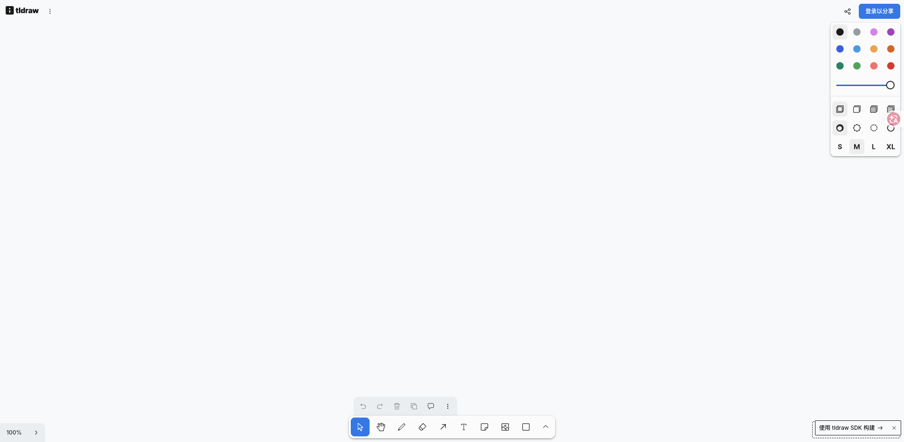

一块打开就能画的无限白板，同时也是一套能嵌进自己产品里的画布 SDK。
真实运行的 tldraw，白板上是一段真实的评审讨论记录
便签有纸感阴影、圆角很轻，手绘字体是 Shantell Sans；箭头绑定在便签上，拖动便签时箭头跟着走 —— 这是白板而不是画图工具的关键差别。
import { Tldraw } from 'tldraw' import 'tldraw/tldraw.css' export default function App() { return ( <!-- 容器需要固定尺寸，画布会撑满它 --> <div style={{ position: 'fixed', inset: 0 }}> <Tldraw /> </div> ) }

一个免注册的在线白板：打开就是画布，支持多人实时协作，手机、平板、桌面都能用。
同时它把这块画布打包成了 SDK：开发者可以用一行组件把同一套白板能力嵌进自己的产品，而不只是去 tldraw.com 上画图。